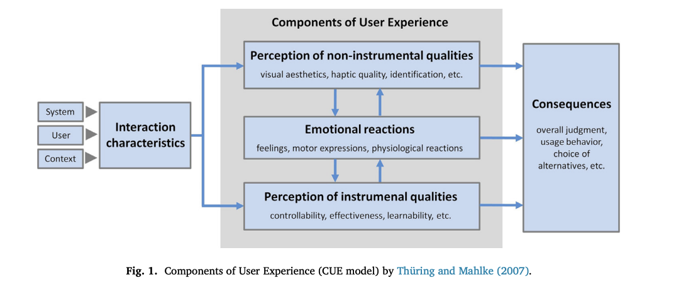
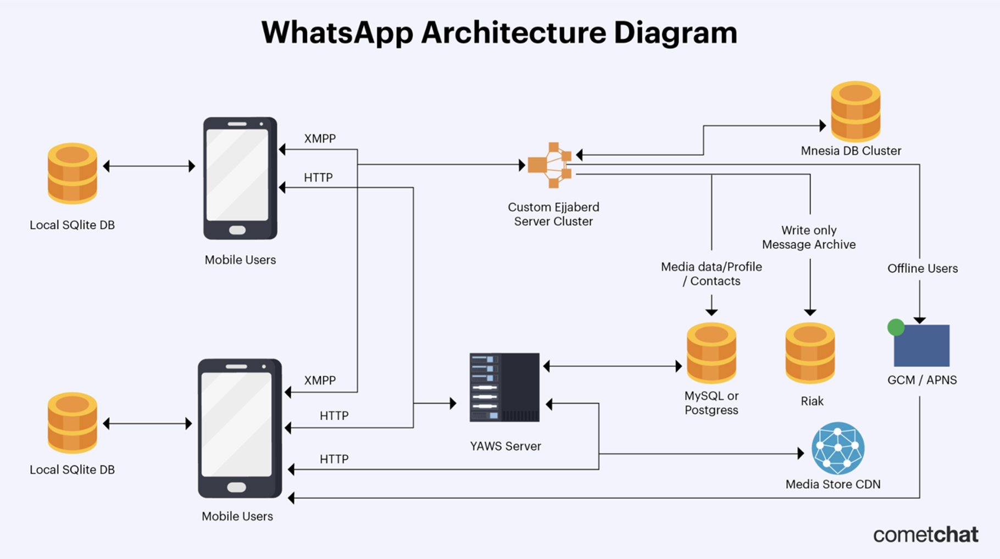
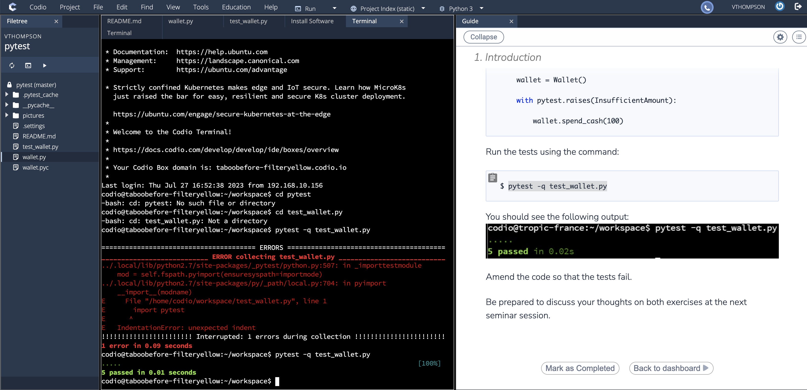

Features
Project Failures Study
What do you believe are the three most common reasons for project failure?
Software engineering projects apply a structured plan to develop a product or a solution. This process consists of design, user testing, development and finally deployment. In order to understand why failures occur, this “requires understanding the casual relationships, i.e, the causes of failures and their effects” (Lehtinen et al., 2014).
The first most common reason for project failure is a chaotic environment. This could be related to access to assets and technology made available. Secondly, social interactions amongst project member impacts whether or not they are going to meet timelines. If colleagues do not effectively communicate and respect each other, they are unlikely to work productively. Finally, the lack of competent and skilled individuals can impact project success. That is why it is essential to properly interview potential project members and ensure they have the necessary skills to complete the tasks at hand. Additionally, proper management is vital.
learn more
Give two examples of failures that support your choices
An example of project failure would be FBI VCF system project (Eggen & Witte, 2006). This was a result of poor management techniques. It is essential that the development cycle is well structured and organised. A project manager needs to stay on top of team member tasks and ensure they work according to the approved timeline. A second example would be the UK Government Tax Credit online system (Computing, 2008). This failure was due to poor quality as they did not conduct adequate testing to ensure it was user friendly and effective.
▲Features
Factors Affecting User Experience
Read Minge & Thuring (2018). Based on the change in human emotion over time, might you adapt Figure 1 in their paper in any way?
User experience can be understood as “a person’s perceptions and responses that result from the use or anticipated use of a product, system or service” (Minge & Thuring, 2018). The CEU model interprets the engagement between the users and the system to be based on “user characteristics, contextual components and system properties” (Minge & Thuring, 2018). Taking this into account, the emotional state of the user can impact how they interact with the system.
learn more
User experience focuses largely on visually appealing elements and components. If the system is user friendly, the user is likely to experience positive emotions. On the other hand, if the system is confusing to the user, they may feel frustrated. Nevertheless, overtime they may develop a different opinion as they become more familiar with the system’s functionality.

The CEU model only portrays one user’s initial engagement with the system, not taking into consideration that the user’s emotional response may change over time. I would redesign the diagram as a continuous loop, where the entire process would need to be repeated. This is because the user emotional response may be altered over time, or the system itself may be updated, which would result in a new user experience.
References
Minge, M. and Thüring, M. (2018) ‘Hedonic and pragmatic halo effects at early stages of User Experience’, International Journal of Human-Computer Studies, 109, pp. 13–25. doi:10.1016/j.ijhcs.2017.07.007.
▲Seminar One: The Gherkin Language
Using a new coffee making machine
Scenario: Making a coffee
Given I have read the instructions
And set up the new coffee machine
And turned it on to ensure there is power
And I have added both the coffee beans and fresh water
When I select the button and choose what coffee I want to make
Then the new coffee machine starts making my coffee
And the coffee is dispensed into my cup
learn more
Scenario: Coffee machine is broken
Given the new coffee machine cannot brew coffee
And it is turned in
and has water in the dispenser
When I try to make a coffee
Then the new coffee machine makes a sound
And no coffee is dispensed
Scenario: Coffee machine is leaking water
Given the new coffee machine is malfunctioning
And it is plugged in
And both water and coffee beans have been added
When I push the button to make a coffee
Then waters leaks out from the bottom of the machine
Data Structures Reflection
How a system operates at the backend using data structures
Data structures are central to the Computer Science field. I decided to look at the everyday online system, WhatsApp. WhatsApp backend operates using numerous different data structures to handle the huge amount of data associated with the application. It is a messaging platform that allows users to send and receive messages.
learn more
WhatsApp architecture is broken up into two primary components, the backend and frontend. The front end focuses on user engagement and the routing of messages. On the other hand, the back end focuses on how user data is stored. WhatsApp back end system main programming language is Erlang (Cressler, 2021).

Based on the above diagram, we can see that a local SQLite database is used to store conversations. The clients utilize “HTTP WebSockets to send and retrieve multimedia data like images and videos from the YAWS web server” (Cressler, 2021). Then, XMPP is utilized to transmit messages to other users. The messaged is then saved and queued in the form of a Mnesia database table. Finally, the message is routed from the queue via the Ejabberd server and is delivered to the recipient.
References
Cressler, C. (2021) Understanding Whatsapp’s Architecture & System Design, RSS. Available at: https://www.cometchat.com/blog/whatsapps-architecture-and-system-design (Accessed: 15 June 2023).
Dicheva, D. and Hodge, A. (2018) ‘Active learning through game play in a Data Structures course’, Proceedings of the 49th ACM Technical Symposium on Computer Science Education [Preprint]. doi:10.1145/3159450.3159605.
Semninar Two: Risks and risk mitigation
Activity Two: Read the articles by Verner et al (2014) and Anton & Nucu (2020) and then answer the following questions:
What are the main risks that the authors identify?
The complexity of software development projects are seen as a risk. For instance, offshore projects may fail as a result of “physical, time, cultural and organisational and stakeholder distances negatively influence communication and knowledge exchange between onshore and offshore project team members” (Verner et al., 2013). For instance, projects are at risk of being unsuccessful due to language barriers or time zone differences.
learn more
According to the Journal of Risk and Financial Management, the factors contributing towards enterprise risk management are as follows, “firm size, financial leverage, book to market ratio, merger and acquisition activities, return of assets, capital opacity, earnings volatility, financial slack, managerial career, business diversification, industry, big four auditor, big three rating, industry competition, monitoring by the board of directors, ownership structure” (Anton & Nucu, 2020). Both authors have highlighted business diversification as a risk, where offshore projects may result in agency problems.
Which of the frameworks discussed in the Unit 3 lecture cast would you use to capture and categorise the risks?
I would adopt the expert judgment-based estimation approach. This is because it is “the most common used approaches by the software industry today” (Jorgensen, Shepperd, 2007). This framework involves an evaluation process with the development team. This is done by analysing previous projects and creating estimates from there. Taking into account why previous projects have failed, a the team are able to adopt this framework to mitigate future risks. Additionally, a project manager can categorise these risks by using the Risk Management Process, which involves a planning phase, a do phase and the act phase.
▲Codio Activity: Pytest
The following task involves experimenting with pytest using the Python programming language.
learn more
Copy the following code into a file named wallet.py:
# code source: https://semaphoreci.com/community/tutorials/testing-python-applications-with-pytest
# wallet.py
class InsufficientAmount(Exception):
pass
class Wallet(object):
def __init__(self, initial_amount=0):
self.balance = initial_amount
def spend_cash(self, amount):
if self.balance < amount:
raise InsufficientAmount('Not enough available to spend {}'.format(amount))
self.balance -= amount
def add_cash(self, amount):
self.balance += amount
Copy the following code into a file named test_wallet.py:
# code source: https://semaphoreci.com/community/tutorials/testing-python-applications-with-pytest
# test_wallet.py
import pytest
from wallet import Wallet, InsufficientAmount
def test_default_initial_amount():
wallet = Wallet()
assert wallet.balance == 0
def test_setting_initial_amount():
wallet = Wallet(100)
assert wallet.balance == 100
def test_wallet_add_cash():
wallet = Wallet(10)
wallet.add_cash(90)
assert wallet.balance == 100
def test_wallet_spend_cash():
wallet = Wallet(20)
wallet.spend_cash(10)
assert wallet.balance == 10
def test_wallet_spend_cash_raises_exception_on_insufficient_amount():
wallet = Wallet()
with pytest.raises(InsufficientAmount):
wallet.spend_cash(100)
Run the tests using the command: $ pytest -q test_wallet.py
Amend the code so that the tests fail.

▲
E-portfolio activity
As a Project Manager, what might be your response to manage the emotional reactions of a customer? You should use at least three academic papers to support your response and write a minimum of 300 words as your response.
Emotions are a driving factor of human experience. When we consider the interaction between humans and computers, the same applies. Seeing that emotions are a very complex phenomenon, it is important to make use of emotional measurement tools (Agarwal and Meyer, 2009). Emotional measurement tools, such as t-test can be deployed to understand usability of software.
learn more
There are many challenges with understanding customer demands and ensuring they have the best user experience. A project managers role is to ensure their team has access to toolkits to make sure their product is user friendly, without inhibiting innovation. These tools can be determined based on a hedonic and utilitarian experience. A hedonic experience is based on the “interactions with virtual environments related to mental stimulation, pleasure and enjoyment” (Fuller et al., 2016). On the other hand, a utilitarian experience is “related to cognitive and instrumental benefits that customers gain” (Fuller et al., 2016).
It is essential that user testing is conducted in order to achieve the intended user experience. If the platform is able to achieve its intended purpose, it will be successful. Thus, it is vital that a project manager ensures that a researcher conducts thorough user tests to highlight ease of use and pain points for users. During this process, it is important that you make sure the user feels comfortable and safe during the test. Additionally, empathy plays a huge role in creating great usability. This is because if you can truly understand what a user feels, you can design a better experience.
It is critical that user testing feedback is analysed and solutions are offered. A project manager ensures we learn from our user’s previous and current emotional reactions when engaging with a platform. Overall, as a project manager, trust and transparency create positive user engagement. This is done by is constantly analysing and managing the emotional reactions of customers.
References
Agarwal, A. and Meyer, A. (2009) ‘Beyond usability’, CHI ’09 Extended Abstracts on Human Factors in Computing Systems [Preprint]. doi:10.1145/1520340.1520420.
Cajander, Å., Larusdottir, M. and Geiser, J.L. (2022) ‘UX professionals’ learning and usage of UX methods in Agile’, Information and Software Technology, 151, p. 107005. doi:10.1016/j.infsof.2022.107005.
Dautenhahn, K. (2007) ‘Methodology & themes of human-robot interaction: A growing research field’, International Journal of Advanced Robotic Systems, 4(1), p. 15. doi:10.5772/5702.
Development Team Project: Project Report
You (your group) are required to produce a proposal that details a suitable development methodology for the system under consideration, supported by a discussion that justifies the choice of methodology. You should also produce a set of requirements, a development plan with suitable milestones, proposed deliverables and an estimated cost of the system.
Project ReportDevelopment Team Project: Presentation
A presentation of your response to the EDC challenges
PresentationModule Reflection
Unit 1
What?
In the first unit, we were introduced to Software Project Management. We explored “the art and science of planning and leading software projects.” This involved exploring how software project management came about, the tools required and reasons for project failure.
So what?
The team project would entail the execution of a project. The process consists of the following stages: requirements, design, development, testing and deployment. I currently work as a product designer, where we have adopted an agile frame of work. I have never been exposed to a waterfall environment, and therefore it has been interesting to explore this methodology.
learn more
Now what?
The collaborative discussion focused on the most common reasons for project failures. Taking this into account, the team and myself can aim towards working effectively, whilst being aware of reasons as to why we may fail. Thus, we will need to create an environment devoid of chaos, harness one anothers skills and effectively communicate and respect one another.
Unit 2
What?
In seminar one, we were introduced to the Gherkin language. We learnt that the Gherkin language can be used to highlight requirements for a software project. The Gherkin language acts as a link between the business and technical sphere.
So what?
It is evident that the Gherkin language can be used to communicate effectively between different team members when addressing requirements, using the proposed syntax: given, then and when.
Now what?
Ultimately, the team project can make use of Gherkin statements to highlight requirements and uncover the expected behavior of the system.
Unit 3 and 4
What?
In unit 3, we were introduced to different estimating methods and tools, such as the Mythical Man Month, COCOMO, Function Points and Expert Judgement. Additionally, we were presented with planning techniques. In unit 4, we investigated which tools can be used to create a project estimate.
So what?
Seminar two consisted of two activities. The first activity involved selecting an estimation tool. I chose to explore the Function Point Estimating Method to define the amount of effort and time it would take to complete a software project. In doing so, we would need access to all data related to previous projects. Ultimately, it identifies the software worth for a user. The second activity involved exploring different risks that can lead to software project failure. Additionally, the different frameworks that can be adopted to mitigate these risks.
Now what?
I believe that expert judgement-based estimation approach is an effective framework in the software industry. The process involves evaluating previous projects and their mistakes. Consequently, the team are able to adopt this framework to mitigate future risks. Furthermore, a project manager can categorise these risks by using the Risk Management Process, which involves a planning phase, a do phase and the act phase.
Unit 5
What?
Unit 5 focused on user experience and the metrics used to determine whether or not a product is user friendly. Additionally, how a project manager is an important entity responsible for ensuring that we build a product that holds value for the business.
So what?
The discussion forum focused on human emotion and the effect it has on user engagement with a system. The CEU model interprets the engagement between the users and the system to be based on “user characteristics, contextual components and system properties” (Minge & Thuring, 2018).
Now what?
I have learnt that it is important to take into consideration that a user’s emotional response to a system may change over time. Consequently, continuous user testing is required. I also learnt that although a project managers primary focus is the backlog and task execution, they need to understand how important user experience is. Thus, task execution can be shaped in a manner that supports positive user engagement.
Unit 6
What?
Unit 6 introduced test-driven development techniques. Seminar 3 focused on conducting a Pytest. Additionally, we were required to submit the project report as a team.
So what?
A Pytest is a powerful testing framework, which makes use of the Python language. The simple syntax can be used to easily write and maintain scripts. During the process of creating the project report, we decided to meet once a week to align on tasks. I was responsible for defining the methodology and creating gherkin statements to express project requirements. Please refer to the meeting minutes captured here:
Meeting minutes
Now what?
I learnt that Pytest framework relies on proper syntax, where python needs to adhere to certain rules. If the syntax is incorrect, the test may fail or produce false results.
Working on a team is both beneficial and challenging. I really enjoyed my team members and felt that everyone communicated effectively and respected each other’s fields of expertise. I however felt inadequate to my teammates as they all had more experience with software development than myself. Their current jobs and skills revolved around development, whereas I am still learning and my work focuses on user experience. I feel I was unable to contribute significantly to the code developed. In the future and as I gain more experience, I hope to be more confident.
References
1. Baseline (2003) Hospital Revives its Dead Patients. Available from: https://www.baselinemag.com/c/a/Projects- 2. Networks-and-Storage/Hospital-Revives-Its-QTEDeadQTE-Patients [Accessed: 14 November 2021] BBC (2015) US Prisoners Released Early by Software Bug. Available from: https://www.bbc.co.uk/news/technology- [Accessed: 14 November 2021] 3. Shelly, B., Cashman, T. & Rosenblatt, H.(2006) Systems Analysis and Design: Sixth Edition. Chapter 1. Thomson Course Technology Course. 4. Sommerville I. (2015) Software Engineering. 10th. ed. Essex: Pearson.
▲